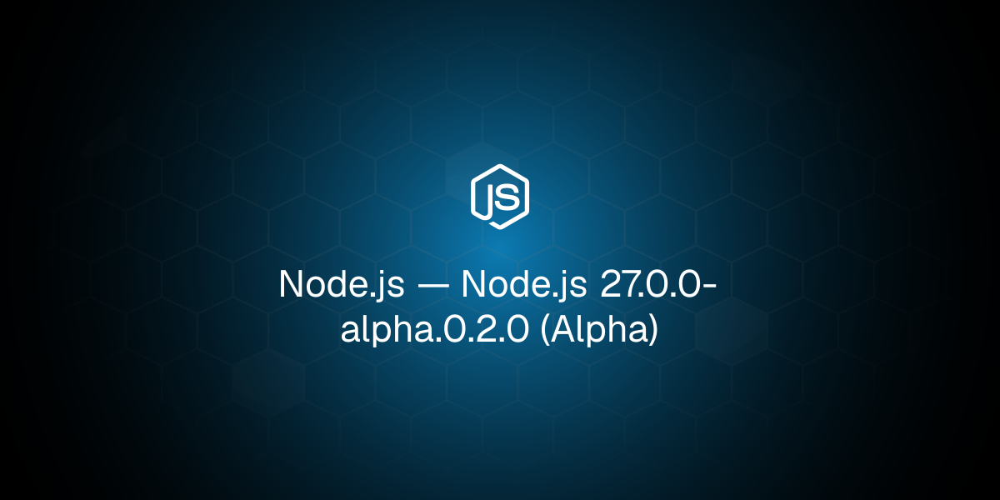
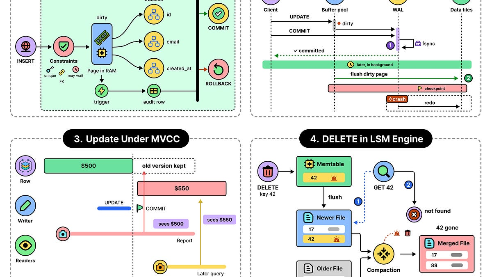
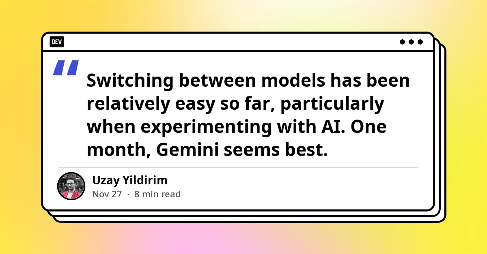
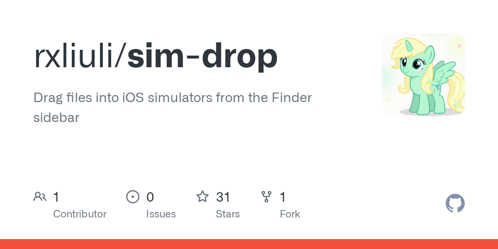
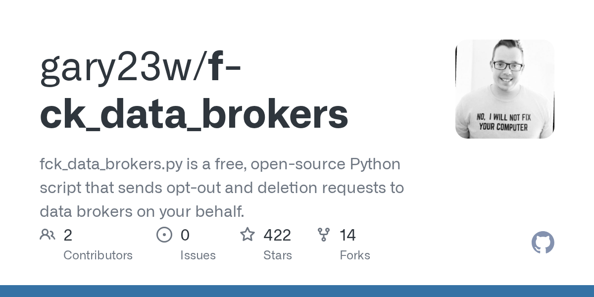
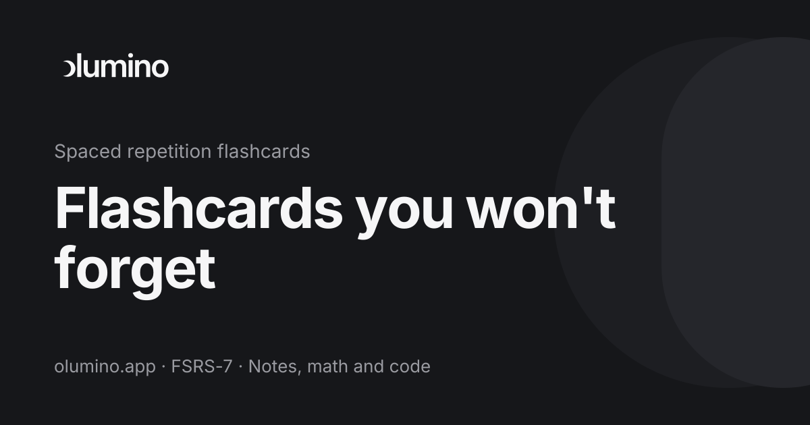

🔥 Top 3 (must read)
Node.js 27.0.0-alpha.0.2.0 (Alpha)
The Node.js team released a new alpha build of the next major version, Node.js 27. It is an early, unstable release, so you can test against it but should not run it in production. Why it matters: You can run your Node.js backends and CI against v27 now and find breaking changes before the stable release.

AI made self-hosting fun again
(HN discussion, 369 points, 205 comments) A blog post about how AI assistants make running your own servers and services easier and more fun. It was one of the most discussed posts on Hacker News today. Why it matters: It combines two of your interests, AI tools for developers and DevOps. The 205 comments are a good place to see how real teams use AI for infra work.
J
The Life of a Database Row: What Really Happens Behind the Scenes
ByteByteGo follows one database row through each operation on it, step by step. It explains what the database does under the hood. Why it matters: This is a good system-design refresher for you, and good material to share with your team before backend design reviews.

🛠 Tools & releases
sqlite3_rsync
: a tool for copying a SQLite database to a remote machine. It was added as experimental in SQLite 3.47.0 (October 2024) and improved in 3.50.0 (May 2025). Simon Willison writes about a strong feature of it that he only understood recently.
S
🤖 AI for developers
AI Providers Are Raising Prices. Can Businesses Afford to Walk Away?
: switching between Gemini, Claude and GPT is easy while you are only testing. Once AI is built deep into your product, the cost of leaving a provider can matter as much as the cost of using it. This is useful for EM planning on lock-in (being stuck with one vendor).

🎯 For me
Node.js 27 alpha
: add it as an optional job in one CI pipeline to catch problems early.
Flutter Firebase Storage: Upload Images & Files
: a full guide to file uploads in Flutter. It covers setup, upload tasks, progress tracking, and saving the download URL. It is basic, but a handy reference for the mobile team.
AI provider price rises
: relevant if your team depends on one AI vendor for coding tools or product features.
💡 App ideas & indie builds
SimDrop
(HN): shows your iOS simulators in the macOS Finder sidebar. Problem: getting files into and out of a simulator is slow and clumsy. Inspiration: a tiny tool that removes one daily pain for mobile devs. You probably feel this pain in Flutter work too.

Fuck_data_brokers.py
(HN, 224 points): a script that helps you remove your personal data from data broker sites. Problem: opting out by hand from many broker sites is slow and boring. Inspiration: automating a boring privacy task that many people hate got very strong interest.

Three Linux VMs in a browser tab
(HN): three Linux virtual machines running in one browser tab, each with a different browser inside. Problem: comparing how a page looks in different browsers usually needs several installs or a paid service. Inspiration: a fresh idea for zero-install cross-browser testing.
M
Olumino
(HN): a Markdown notes app with spaced repetition built in (cards come back at growing time gaps so you remember them). Problem: notes and flashcards usually live in two different apps. Inspiration: joining two tools people already use into one flow. This could be relevant to learning apps.

A Vim manual written over 4 years
(HN): one person wrote a complete, structured Vim guide. Problem: Vim knowledge is spread across many places and is hard to learn. Inspiration: a long-term, deep content product can be a side project too.
T
🎓 Try this
SimDrop
: if you test the Flutter app on iOS simulators, install it and see if it makes moving files like test images, PDFs and exports into the simulator faster.